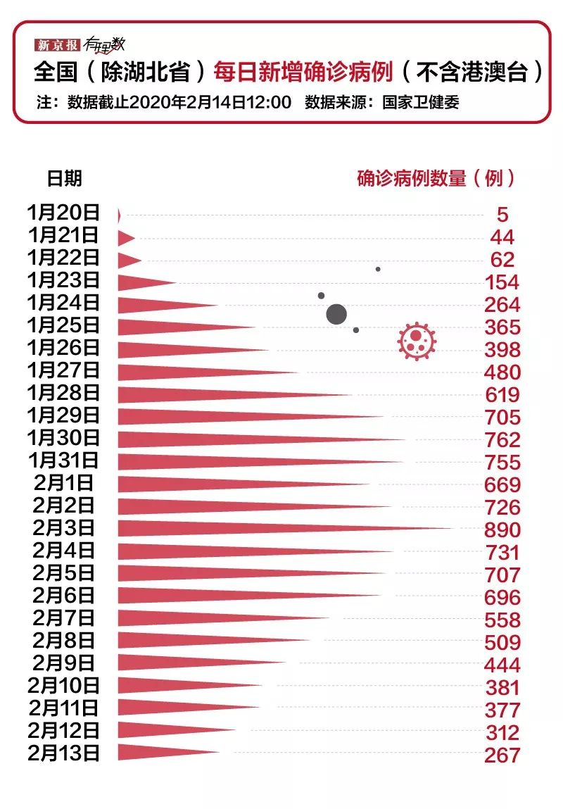
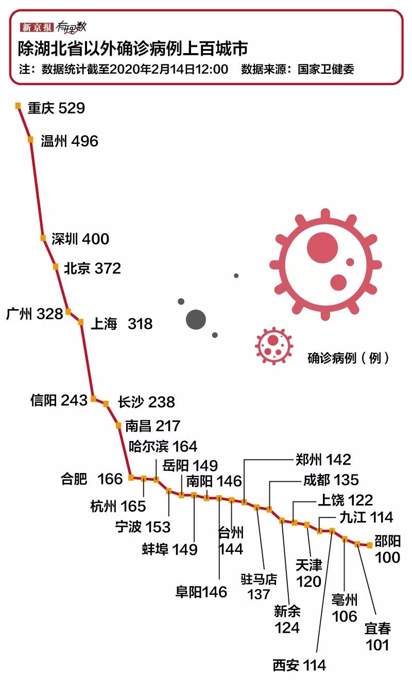
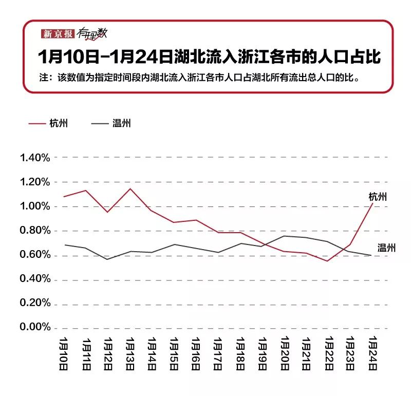

黄冈：疫区副中心的春节
原文链接 备份链接 “出不去，进不来。走不了，不敢走。” 江与湖 No.154 何处惹尘埃 黄冈：疫区副中心的春节 作者：花鳞 韩国电影《釜山行》，讲了一个逃离丧尸围城的故事，父亲用自己的生命换回女儿一条命。但据说，这部电影其实有两个 …

全国除了湖北省以外的城市确诊人群数量上百的已经有29个城市。
全文1703字，阅读约需3.5分钟
疫情还在持续，截至2020年2月14日，全国已经确诊感染新型冠状病毒63935例，其中湖北省51986例。
但比较好的一方面是，湖北以外新增确诊人数不断下降，据钟南山表示，疫情的高峰应该在二月中旬或者下旬到来，然后迎来平稳期和下降期。

在举国上下共抗疫情的攻坚战里，及时隔离、切断传染源能够有效控制新型冠状病毒肺炎，从目前的数据看，效果逐渐发挥出来。
湖北省除了武汉市之外的其他地区，新增确诊病例也在逐渐放缓。

从全国确诊病例人数看，除了湖北本省之外，广东、河南和浙江的人数都已上千。广东省经济较为发达，人口流动规模大，与外界交流较多，感染人数较多也不意外。
除此，就是和湖北毗邻的湖南和安徽感染人数较多。此次新型冠状病毒聚集性传播涉及范围广，时至年节，人员流动频繁，加速了这几个地方人群感染速度。
全国除了湖北省以外的城市确诊人群数量上百的已经有29个城市。

河南、浙江和江西分别有四个城市确诊病例都上百了，安徽和湖南各三个。重庆作为与湖北紧邻的直辖市，确诊病例也较多。
北京、上海、深圳和广州作为经济规模最大以及人口持续流入的重镇，出现在其中并不令人意外。
而郑州、长沙、南昌、合肥，则是与湖北邻近省份的省会城市，疫情形势自然也不一般。
但就在这确诊人数都上百的29个城市中，有几个城市还是需要注意一下。
━━━━━
温州
从地理位置上看，温州与武汉相隔近千里，为什么疫情如此严重，仅跟在重庆之后，感染了这么多人？
温州人靠爱做生意、会做生意扬名，湖北四通八达的交通让许多温商青睐有加。有数据显示，湖北的温州商会会员总数达7375家，有效会员单位4000余家。这些企业大部分在武汉。
温州市副市长汤筱疏在新闻发布会所述指出，“在武汉经商、就学和务工的，有18万温州人，而在武汉关闭离汉通道后，1月23日至27日5天，仍旧有1.88万人从湖北特别是武汉到达温州，平均每天有3600多人”。

百度迁徙数据显示，1月19日1月23日，温州超过杭州，成为浙江省内湖北流出人口第一目的地。
另外，温州市2018年全市常住人口就有925万人，位居浙江省第二，仅次于杭州的980万。人口密度为774人/平方公里，是全国的5.5倍，全省的1.4倍。在人口密度最高的鹿城区，达到4399人/平方公里。
大量人口从武汉返回温州，再加上城市自身密集的人口分布，这给温州在疫情防护上带来不小挑战。
━━━━━
信阳
另一个值得关注的城市是河南信阳。
在本次疫情防治工作中，河南省干脆利落、行之有效的手段让很多省份的网友都非常羡慕。
但从数据看，截至2020年2月14日12:00，河南省已经有确诊病例1184人，其中死亡11人，治愈313人。
确诊病例最多的城市是信阳市和南阳市，信阳市的确诊人数243例，南阳的确诊人数146人。那么为什么河南省不是郑州感染的人数最多，反而是信阳最多？
信阳位于河南省南端，是河南省抵抗本次疫情的最前沿阵地，可以说很多从湖北回河南省的朋友，甚至从南往北走的朋友都要经过信阳市，再加上这次的病毒传染能力比较强，所以信阳市就成了河南省疫情最为严重的地区。
河南是人口大省，也是流动人口大省，信阳市地理位置靠近湖北，甚至更加接近于武汉，所以一直以来都有很多人喜欢到湖北去工作。
加上本次疫情集中暴发又是在春节之前，湖北相关措施不到位，导致很多返乡的信阳人民不慎感染，并且将病毒带回家。

从百度迁徙数据来看，在春节前几天，从武汉出发抵达湖北省以外的十大地区里，河南信阳稳居第一位。
可见，信阳正是武汉春节人口迁出省外的第一大城市，信阳的防控形势之严峻，堪比人口持续流入的一线城市。相信这也是为什么河南省防控如此“硬核”的原因了。
作为普通地级市，在医疗资源和社会资源方面，信阳远没有一二线城市那么充足，这也就对信阳的疫情防控提出更高要求。
当然，随着返程高峰的到来，一些大城市要面临的困难也很大，同样需要打起十二分精神。
*数据新闻编辑 **陈华罗 数据抓取 汤子帅 新媒体设计 甲晨晨 校对 张彦君*
点击下图进入”全国新型冠状病毒感染肺炎实时地图“

*值班编辑 花木南 吾彦祖*


本文未经新京报书面授权不得转载使用
欢迎朋友圈分享

原文链接 备份链接 “出不去，进不来。走不了，不敢走。” 江与湖 No.154 何处惹尘埃 黄冈：疫区副中心的春节 作者：花鳞 韩国电影《釜山行》，讲了一个逃离丧尸围城的故事，父亲用自己的生命换回女儿一条命。但据说，这部电影其实有两个 …
原文链接 备份链接 【财新网】（记者 赵宁 方祖望）毗邻湖北随州、孝感，距武汉市区仅两百余公里，河南“南大门”信阳疫情渐趋严峻。截至2月8日24时，信阳确诊病例破两百，达到205例，是河南最严重的地市。信阳已连续9天新增确诊病例超过两位 …
原文链接 备份链接 【财新网】（记者 黄蕙昭 综合）武汉“封城”距今已有半月，疫情正呈现城市向农村蔓延、输入型向社区感染型发展的新态势。随着武汉周边地市疫情防控的严峻形势浮出水面，“湖北不止一个武汉”成舆论诉求；疫情艰难攻坚时期，如何避 …
原文链接 备份链接 临时报道小组 所有的鱼 所有的鱼 About Feature 地球被毁灭之前究竟发生了什么？ Today 根据丁香医生实时数据，截至 2020 年 2 月 8 日 18 时，全国累计确诊病例 34662 例， …
原文链接 备份链接 *************▲*************2020年1月31日，温州某商业街，店铺都关闭了。（南方周末记者 王华震/图） 全文共*3424*字，阅读大约需要8分钟。 截至2月4日12点，温州确诊新冠肺炎 …